The b bowl was cut in olive #C8D645 while the store ran on volt
#E3FC02 — two greens for one brand. The mark now carries volt, and the three-greens problem is closed.
600 × 307 PNG, minimum 24px. Still white-on-transparent, so it lives on carbon, dark photography or a volt panel. Still missing: a positive version and an SVG — worth commissioning now that the colour is settled.